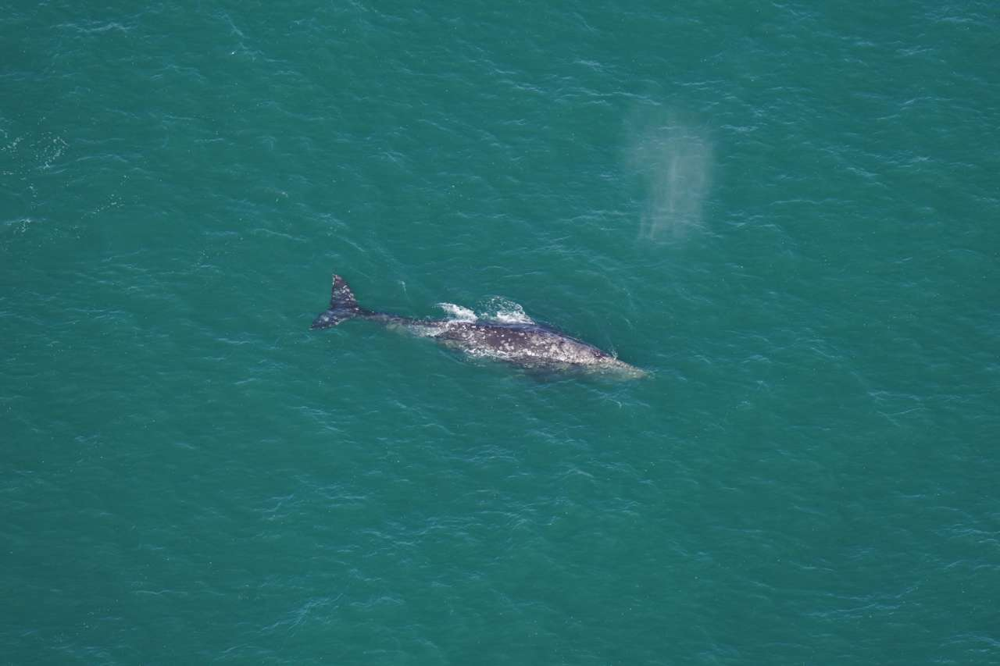
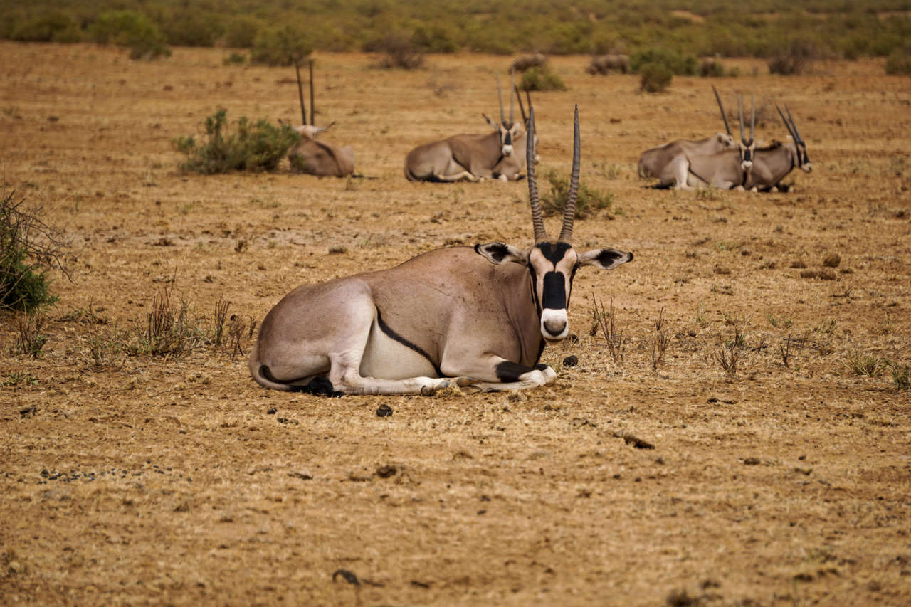

|
|
ANIMALES | MEDIO AMBIENTE | CIENCIA | HISTORIA | VIAJES |
|

|
Ave de madrigueraAunque pasan la mayor parte del año en el mar, estas aves optan por vivir en madrigueras cuando llegan a tierra. |
Pensarás que los tigres son felinos… Pero no lo sonEl término “felino” tiene un significado diferente en el lenguaje común del que tiene en la ciencia. Te explicamos por qué los tigres no se clasifican como tal, al contrario de lo que se suele pensar. |
|
El gato doméstico en libertad supone un problema para la biodiversidadMás allá del tranquilo, elegante e independiente animal con el que muchos compartimos nuestras vidas, el gato doméstico es mucho más que un animal de compañía. |
||
Así ven el mundo los perrosLos canes ven menos colores, pero su visión nocturna es mejor; y aunque ven a distancias más cortas, son capaces de distinguir cosas en movimiento con más facilidad. |
ANIMALESDarwin estaba equivocado: no todos los mamíferos machos son más grandes que las hembrasUna nueva investigación desafía las teorías tradicionales sobre el dimorfismo sexual en mamíferos: solo el 45% presenta machos más grandes que las hembras. |
Este anfibio alimenta a sus crías con una sustancia parecida a la lecheUna nueva investigación desvela que las cecilias, unos extraños anfibios similares a lombrices, secretan un líquido nutritivo similar a la leche de un modo análogo a lo que hacen los mamíferos, pero por un conducto muy distinto. |
Esta revolucionaria herramienta de la NASA y Google sirve para proteger a los tigres que quedan en el mundoTCL 3.0 no solo se limita a la conservación de los tigres, sino que también puede aplicarse a otras especies en peligro. |
Descubren una mutación que predispone a la obesidad en ciertas razas de perrosCiertas razas de perros retriever tienen una predisposición a la obesidad a causa de una mutación genética que les hace tener más hambre y quemar menos calorías. |
Felinos |
Elefantes |
Pulpos |
Koalas |
Pinguinos |
Leones |
MEDIO AMBIENTE |
Celebrando el Día Mundial del Agua 2024: Cada gota cuentaEl viernes 22 de marzo será una buena oportunidad para hacer conciencia y ejercer una acción global en torno a la gestión del agua. |
Así es el Popocatépetl, el volcán más peligroso de MéxicoRepasamos algunos de los aspectos más importantes sobre el volcán Popocatépetl, que desde el sábado muestra una intensa actividad que mantiene en vilo a las autoridades y población mexicana. |
Tsunamis: ¿es posible que se produzca uno en España?Aunque no demasiado frecuentes, existen registros de grandes tsunamis que en el pasado han azotado la península Ibérica pero, ¿podría un tsunami alcanzar nuestro país? ¿Cuáles son las probabilidades y cuáles los lugares más susceptibles de sufrir un tsunami en España? |
Tsunamis: qué son y cómo se producen¿Qué es un tsunami? ¿Cómo se forma y cuál es su capacidad destructiva? ¿Es posible predecirlos y medirlos? Respondemos a todas estas cuestiones sobre los temidos tsunamis. |
Sistema Solar |
Animales en Peligro de Extincion |
Volcanes |
Energias Renovables |
Tabla Periodica |
Planetas |
HISTORIA |
la descolonización está llegando a los museos españoles y europeos: ¿en qué consiste?El significado de esta palabra parece obvio, pero nada más lejos de la realidad: la descolonización no solo se refiere a la devolución de piezas a sus comunidades de origen, sino también a establecer narrativas reconciliadoras. |
legiones romanas: la defensa de britaniaDurante cuatro siglos, miles de legionarios defendieron la frontera más remota del Imperio, hasta que, tras las grandes invasiones bárbaras, Britania quedó abandonada a su suerte. |
“tengo un sueño” de martin luther king y otros discursos que conmovieron a la humanidadLa historia de la humanidad ha registrado grandes discursos influenciadores de las masas que tuvieron la oportunidad de presenciarlos. Estos son algunos de ellos. |
la decimatio, el castigo a los cobardes en las legiones romanasConcebida como un cruel y despiadado castigo a los legionarios que desertaban o huían en pleno combate, la decimatio fue usada en contadas ocasiones para castigar a las tropas. |
VIAJES |
EL PUEBLO DE GRAN CANARIA DONDE LAS MONTAÑAS (Y SU COCINA) SON DIVINASEn el centro mismo de la isla se asienta una de las localidades más bonitas de España, tanto por lo que se ve desde sus calles como por lo que se vive en ellas. |
TARRAGONA TIENE UNA DE LAS CATEDRALES MÁS INFRAVALORADAS DE ESPAÑA (Y NO SE LO MERECE)Edificada sobre las ruinas de un templo romano, es un compendio de curiosidades y leyendas fascinantes. |
EL HOTEL DE ÁMSTERDAM DONDE REMBRANDT PINTÓ «LA RONDA DE NOCHE»El artista neerlandés pintó su famoso cuadro en una de las paredes del actual Hotel Tivoli Doelen, un alojamiento histórico del centro medieval de Ámsterdam. |
QUÉ VER EN PRAGA: LOS DOCE IMPRESCINDIBLES DE UN ESCENARIO QUE PARECE UN RELATO DE HADASConcebida como un cruel y despiadado castigo a los legionarios que desertaban o huían en pleno combate, la decimatio fue usada en contadas ocasiones para castigar a las tropas. |
| Lecturas | _ | .Semana | _ | .El Mueble | _ | .InStyle | _ | .Clara | _ | .Cuerpomente | _ | .Arquitectura y Diseño | _ | .Saber Vivir |